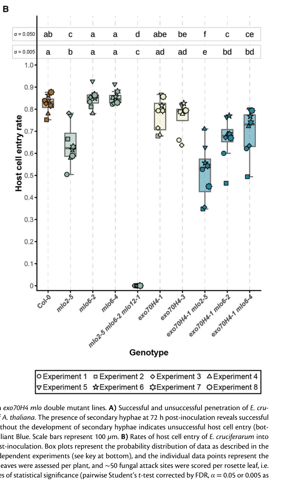

MLO2 (MLO-like protein 2; At1g11310) is a 573-residue, plant-specific seven-transmembrane protein of the MLO family and the Arabidopsis co-ortholog (with MLO6 and MLO12, clade V) of barley MLO. It resides in the plasma membrane, with an extracellular N-terminus and a cytosolic C-terminal tail carrying a calmodulin-binding helix through which it associates with calmodulin (CAM2) in a Ca2+-dependent manner. Expressed in mammalian cells, MLO2 forms a divalent-cation-permeable channel that conducts Ca2+, Ba2+ and Mg2+ but not Na+ or K+, is blocked by La3+ and Gd3+, and is inhibited by co-expressed calmodulin. In leaf epidermal cells MLO2 is the major susceptibility factor for adapted powdery mildew fungi: upon attack it accumulates focally in the plasma membrane beneath fungal appressoria and around the penetration peg, and it enables fungal entry and suppression of host defenses, including indolic antimicrobial metabolites. mlo2 single mutants are partially resistant (resistance depends on PEN1, PEN2 and PEN3), while mlo2 mlo6 mlo12 triple mutants are fully penetration-resistant and mount faster, broader defense responses. Together with MLO6 and MLO12 and the exocyst subunit EXO70H4, MLO2 also contributes to polarized secretion and secondary cell wall formation in leaf trichomes. Whether its channel activity is what makes epidermal cells permissive to fungal entry is not yet established.
| GO Term | Evidence | Action | Reason |
|---|---|---|---|
|
GO:0003674
molecular_function
|
ND
GO_REF:0000015 |
MODIFY |
Summary: Root-term placeholder indicating no known molecular function. This is now outdated: MLO2 has been shown directly to conduct Ca2+ (and Ba2+, Mg2+) in heterologous patch-clamp experiments [PMID:35794475] and to bind calmodulin via its C-terminal calmodulin-binding domain [PMID:37767715].
Reason: Direct experimental evidence for MLO2 molecular activities exists, so the ND placeholder should be replaced by calcium channel activity and calmodulin binding (both also proposed as NEW annotations below).
Proposed replacements:
calcium channel activity
calmodulin binding
Supporting Evidence:
PMID:35794475
To confirm Ca2+ imaging results, we used patch-clamp to directly measure transport activity of AtMLO2 and recorded large inward currents that depended on external Ca2+ concentrations
PMID:37767715
found in most protein-protein interaction experiments reduced binding of CAM2 to the corresponding MLO2/MLO2CT-LW/RR mutant variants in comparison with the respective wild-type versions
|
|
GO:0005576
extracellular region
|
HDA
PMID:28887381 Global Analysis of Membrane-associated Protein Oligomerizati... |
REMOVE |
Summary: High-throughput assignment from a size-exclusion/LC-MS profiling study of membrane-associated protein complexes in Arabidopsis leaves; MLO2 is not discussed individually. MLO2 is a polytopic integral membrane protein of the plasma membrane, with only short loops and the N-terminus facing the apoplast [file:ARATH/MLO2/MLO2-deep-research-falcon.md].
Reason: A seven-transmembrane integral plasma membrane protein is not a resident of the extracellular region; the assignment most likely reflects fraction classification in a large-scale proteomic dataset rather than localization of MLO2 outside the cell. Plasma membrane already captures the topologically correct location.
Supporting Evidence:
PMID:28887381
Here we combined cell fractionation of Arabidopsis leaves with nondenaturing detergent solubilization and LC/MS-based profiling of size exclusion chromatography fractions to measure the apparent masses of >1350 membrane-associated proteins.
file:ARATH/MLO2/MLO2-deep-research-falcon.md
MLO2 is a plant-specific, seven-transmembrane protein
|
|
GO:0005794
Golgi apparatus
|
HDA
PMID:22430844 Isolation and proteomic characterization of the Arabidopsis ... |
KEEP AS NON CORE |
Summary: MLO2 was detected in a purified Golgi proteome. Live imaging of MLO2-GFP shows, in addition to the cell periphery, cytoplasmic puncta associated with a Golgi marker, consistent with MLO2 transiting the secretory pathway [file:ARATH/MLO2/MLO2-deep-research-falcon.md].
Reason: Plausible as a biosynthetic/trafficking location for a polytopic plasma membrane protein, and supported by imaging of Golgi-associated puncta, but the plasma membrane is where MLO2 acts.
Supporting Evidence:
PMID:22430844
A collection of 371 proteins consistently identified in all replicates has been proposed to represent the Golgi proteome
file:ARATH/MLO2/MLO2-deep-research-falcon.md
Before challenge, MLO2–GFP has been observed at the cell periphery and in cytoplasmic puncta associated with a Golgi marker.
|
|
GO:0005886
plasma membrane
|
ISS
PMID:16525893 Expression analysis of the AtMLO gene family encoding plant-... |
ACCEPT |
Summary: Inferred from barley MLO, which was biochemically shown to be a seven-transmembrane plasma membrane protein. Consistent with direct imaging of MLO2 fusions at the plasma membrane and in plasma membrane speckles in trichomes and at fungal attack sites [PMID:38124479].
Reason: Plasma membrane is the functional location of MLO2, where it acts as a Ca2+-permeable channel and accumulates beneath fungal appressoria.
Supporting Evidence:
PMID:16525893
The Arabidopsis (Arabidopsis thaliana) genome contains 15 genes encoding protein homologs of the barley mildew resistance locus o (MLO) protein biochemically shown to have a seven-transmembrane domain topology and localize to the plasma membrane.
PMID:38124479
Here, MLO2-GFP co-localized with mCherry-EXO70H4 in PM speckles and the cell wall
|
|
GO:0005886
plasma membrane
|
TAS
PMID:16525893 Expression analysis of the AtMLO gene family encoding plant-... |
ACCEPT |
Summary: Traceable author statement of plasma membrane localization for AtMLO proteins, based on barley MLO biochemistry; supported for MLO2 by later imaging [PMID:38124479].
Reason: Correct functional location of MLO2.
Supporting Evidence:
PMID:16525893
biochemically shown to have a seven-transmembrane domain topology and localize to the plasma membrane
PMID:38124479
revealed that the MLO2-GFP fusion protein co-localized with mCherry-EXO70H4 in mature trichomes, mainly in the zone of the OR and above it at the PM delineating the thickened secondary cell wall
|
|
GO:0006952
defense response
|
IEA
GO_REF:0000002 |
MODIFY |
Summary: InterPro2GO mapping from the Mlo domain. For MLO2 the sign is inverted: wild-type MLO2 enables powdery mildew entry and defense suppression, and resistance arises only when MLO2 (with MLO6 and MLO12) is lost [PMID:16732289, PMID:28674541, PMID:38124479]. Many MLO family members act in pollen tube reception or root growth, so the domain mapping is also broad at the family level [PMID:36588121].
Reason: An unqualified "defense response" implies MLO2 executes defense, the opposite of what loss-of-function genetics show. The triple mutant mounts an accelerated, broader defense response and the authors infer a role for MLO2/6/12 in enabling defense suppression. "Negative regulation of defense response" (GO:0031348) captures the supported direction of effect, is already annotated to MLO2 by TAIR from PMID:16732289, and matches the replacement used for barley MLO. The mechanism is unknown, so an executive defense term is deliberately not proposed.
Proposed replacements:
negative regulation of defense response
Supporting Evidence:
PMID:28674541
In addition, our results point to a role of Arabidopsis MLO2, MLO6, and MLO12 in enabling defense suppression during invasion by adapted powdery mildew fungi.
PMID:28674541
Comparative microarray-based transcriptome analysis of mlo2 mlo6 mlo12 mutants and wild type plants upon Golovinomyces orontii inoculation revealed an increased and accelerated accumulation of many defense-related transcripts.
|
|
GO:0009506
plasmodesma
|
HDA
PMID:21533090 Arabidopsis plasmodesmal proteome. |
KEEP AS NON CORE |
Summary: Detection in a cell-wall-derived plasmodesmal proteome. The authors note that this proteome is enriched for membrane proteins and contains contaminants; MLO2 was not validated individually.
Reason: Plasmodesmata are lined by plasma membrane, so a plasma membrane protein being recovered here is plausible, but there is no targeted evidence that MLO2 is enriched at or functions in plasmodesmata.
Supporting Evidence:
PMID:21533090
Relative to other cell wall proteomes, the PD-proteome is depleted in wall proteins and enriched for membrane proteins, but still has a significant number (35%) of putative cytoplasmic contaminants
|
|
GO:0009507
chloroplast
|
ISM
GO_REF:0000122 |
REMOVE |
Summary: AtSubP sequence-based prediction. MLO2 is a seven-transmembrane plasma membrane protein; imaging places MLO2 fusions at the plasma membrane and in Golgi-associated puncta, and chloroplast-like signals seen near MLO2-GFP trichomes were attributed to underlying mesophyll cells [PMID:38124479].
Reason: Contradicted by experimental localization and topology; no chloroplast targeting evidence exists.
Supporting Evidence:
PMID:38124479
Note that the ellipsoid structures seen in the GFP channel in the case of the MLO2-GFP trichome likely are chloroplasts present in mesophyll cells beneath the trichome cell.
|
|
GO:0009620
response to fungus
|
IMP
PMID:10677553 Isolation and characterization of powdery mildew-resistant A... |
KEEP AS NON CORE |
Summary: From the powdery mildew resistant (pmr) mutant screen; the pmr2 locus was later shown to correspond to MLO2 (cached abstract does not name MLO2, so the curator's full-text reading is deferred to). Loss of MLO2 alters the outcome of powdery mildew infection.
Reason: A neutral, broad process term that correctly reflects that MLO2 function affects the plant-fungus interaction, but it describes a phenotype rather than what MLO2 does; the more informative term is negative regulation of defense response.
Supporting Evidence:
PMID:10677553
we identified 20 recessive Arabidopsis mutants that do not support normal growth of the powdery mildew pathogen, Erysiphe cichoracearum
|
|
GO:0016020
membrane
|
IEA
GO_REF:0000120 |
ACCEPT |
Summary: Correct but uninformative; MLO2 is a multi-pass membrane protein whose specific location (plasma membrane) is already annotated.
Reason: True and non-misleading; the more specific plasma membrane annotation already exists, so no replacement is needed.
Supporting Evidence:
file:ARATH/MLO2/MLO2-deep-research-falcon.md
MLO2 is a plant-specific, seven-transmembrane protein
|
|
GO:0031348
negative regulation of defense response
|
IMP
PMID:16732289 Conserved requirement for a plant host cell protein in powde... |
ACCEPT |
Summary: Consonni et al. showed a conserved requirement for MLO proteins in powdery mildew pathogenesis in Arabidopsis; mlo2 resistance requires PEN1 (syntaxin), PEN2 (glycosyl hydrolase) and PEN3 (ABC transporter). Later work showed the mlo2 mlo6 mlo12 triple mutant mounts faster and broader defense responses and that the adapted fungus defeats indolic defense metabolite accumulation in an MLO-dependent manner [PMID:28674541].
Reason: Best available process term for MLO2: wild-type MLO2 suppresses defense outputs that otherwise block fungal entry. Consistent with the barley MLO review. Mechanism (possibly local Ca2+ influx) remains unresolved.
Supporting Evidence:
PMID:16732289
Here, we demonstrate a conserved requirement for MLO proteins in powdery mildew pathogenesis in the dicotyledonous plant species Arabidopsis thaliana.
PMID:16732289
Epistasis analysis showed that mlo resistance in A. thaliana does not involve the signaling molecules ethylene, jasmonic acid or salicylic acid, but requires a syntaxin, glycosyl hydrolase and ABC transporter.
PMID:28674541
In contrast to a non-adapted powdery mildew pathogen, the adapted powdery mildew fungus is able to defeat the accumulation of defense-relevant indolic metabolites in a MLO protein-dependent manner.
|
|
GO:0050832
defense response to fungus
|
IMP
PMID:16732289 Conserved requirement for a plant host cell protein in powde... |
MODIFY |
Summary: Same paper and phenotype as the negative regulation of defense response row. Loss of MLO2 enhances penetration resistance to powdery mildew, i.e. wild-type MLO2 opposes rather than executes defense against the fungus [PMID:16732289, PMID:38124479].
Reason: The phenotype (resistance upon loss of function) establishes that MLO2 is a susceptibility factor, not a participant in defense. "Defense response to fungus" reads as MLO2 performing defense and is the necessity-vs-participation conflation flagged for MLO genes. The directionally correct term, negative regulation of defense response, is already supported by the same paper; this row should be replaced by it, as was done for barley MLO.
Proposed replacements:
negative regulation of defense response
Supporting Evidence:
PMID:38124479
Unlike mlo6 plants, mlo2-5 (∼64%) mutants supported significantly lower levels of host cell entry compared to Col-0, while mlo2-5 mlo6-2 mlo12-1 triple mutants were completely resistant (∼0%)
PMID:28674541
In addition, our results point to a role of Arabidopsis MLO2, MLO6, and MLO12 in enabling defense suppression during invasion by adapted powdery mildew fungi.
|
|
GO:0005262
calcium channel activity
|
IDA
PMID:35794475 A receptor-channel trio conducts Ca(2+) signalling for polle... |
NEW |
Summary: AtMLO2 expressed in COS7/HEK293T cells mediated Ca2+ entry and large Ca2+-dependent inward currents in whole-cell patch clamp; it also conducted Ba2+ and Mg2+ but not K+ or Na+, and currents were blocked by La3+ and Gd3+. Co-expressed calmodulin strongly inhibited MLO-mediated Ca2+ entry, including for AtMLO2.
Reason: Direct electrophysiological demonstration of channel activity of MLO2 itself (not a paralog), in a cell type lacking endogenous MLO. The family is now described as plant-specific Ca2+ channels [PMID:38124479]. Evidence is heterologous only; whether channel activity underlies powdery mildew susceptibility in planta is untested.
Supporting Evidence:
PMID:35794475
To confirm Ca2+ imaging results, we used patch-clamp to directly measure transport activity of AtMLO2 and recorded large inward currents that depended on external Ca2+ concentrations
PMID:35794475
We also found that AtMLO2 was permeable to Ba2+ and Mg2+, but not to K+ or Na+
PMID:35794475
Furthermore, two typical Ca2+ channel blockers lanthanum (La3+) and gadolinium (Gd3+) inhibited the AtMLO2-mediated inward currents
|
|
GO:0005516
calmodulin binding
|
IDA
PMID:37767715 Comprehensive comparative assessment of the Arabidopsis thal... |
NEW |
Summary: The MLO2 C-terminal calmodulin-binding domain interacts with CAM2 in most of seven independent in vitro and in vivo interaction assays; substitution of two key hydrophobic residues (LW/RR) reduced binding in most assays. In heterologous cells, calmodulin co-expression inhibits MLO2-mediated Ca2+ entry [PMID:35794475].
Reason: Direct, mutationally controlled evidence for a molecular interaction of MLO2 itself, with functional relevance (calmodulin feedback on channel activity). Matches the calmodulin binding annotation proposed for barley MLO.
Supporting Evidence:
PMID:37767715
We here tested the respective interaction between Arabidopsis thaliana MLO2 and CAM2 using seven different types of in vitro and in vivo protein-protein interaction assays.
PMID:37767715
found in most protein-protein interaction experiments reduced binding of CAM2 to the corresponding MLO2/MLO2CT-LW/RR mutant variants in comparison with the respective wild-type versions
PMID:35794475
A dramatic inhibition of Ca2+ entry was observed in all cases
|
Q: Is MLO2 channel activity required for powdery mildew susceptibility? Do resistance-conferring mlo2 point mutants lose Ca2+ conductance, and does local Ca2+ influx occur at penetration sites in an MLO2-dependent manner?
Q: Is "negative regulation of defense response" the best process term for a susceptibility factor whose mechanism is unknown, or is a term describing host-side facilitation of fungal entry (a host "susceptibility" process) needed in GO?
Q: Does MLO2 function in trichome secondary-wall secretion (with EXO70H4) independently of MLO6 and MLO12, or is this a strictly redundant clade V function?
Experiment: Patch clamp of wild-type MLO2 versus resistance-conferring mlo2 alleles and the LW/RR calmodulin-binding mutant in HEK293T cells, paired with complementation of mlo2 mlo6 mlo12 plants, to test whether conductance correlates with susceptibility.
Experiment: GCaMP or R-GECO Ca2+ imaging at Erysiphe/Golovinomyces penetration sites in wild type, mlo2 and mlo2 mlo6 mlo12 epidermal cells.
The research report should be a detailed narrative explaining the function, biological processes, and localization of the gene product. Citations should be given for all claims.
You should prioritize authoritative reviews and primary scientific literature when conducting research. You can supplement
this with annotations you find in gene/protein databases, but these can be outdated or inaccurate.
We are specifically interested in the primary function of the gene - for enzymes, what reaction is catalyzed, and what is the substrate specificity? For transporters, what is the substrate? For structural proteins or adapters, what is the broader structural role? For signaling molecules, what is the role in the pathway.
We are interested in where in or outside the cell the gene product carries out its function.
We are also interested in the signaling or biochemical pathways in which the gene functions. We are less interested in broad pleiotropic effects, except where these elucidate the precise role.
Include evidence where possible. We are interested in both experimental evidence as well as inference from structure, evolution, or bioinformatic analysis. Precise studies should be prioritized over high-throughput, where available.
The target is Arabidopsis thaliana MLO2 (AtMLO2; At1g11310; UniProt Q9SXB6), not a similarly named MLO protein from another species. Its MLO/PF03094-family assignment agrees with the literature: MLO2 is a plant-specific, seven-transmembrane protein with a predicted extracellular or luminal N-terminus and cytosolic C-terminus. MLO2 is one of the Arabidopsis clade-V MLO proteins, alongside MLO6 and MLO12, implicated in powdery-mildew susceptibility. The topology is predicted; it should not be mistaken for an experimentally resolved MLO2 structure. (huebbers2026alphafold3captures pages 70-74, bongartz2023comprehensivecomparativeassessment pages 2-4, bloodgood2025cladevmlo pages 4-6)
The best-established physiological function is to enable efficient fungal entry into living leaf epidermal cells. MLO2 is the principal member of the partially redundant MLO2–MLO6–MLO12 susceptibility group. Removing MLO2 alone reduces, but does not abolish, entry by adapted powdery mildews; removing all three confers near-complete penetration resistance. Thus, despite the name mildew resistance locus O, functional MLO2 promotes host compatibility: the loss-of-function mutation produces resistance. It is not an enzyme with a known catalytic reaction. Its demonstrated molecular activities are divalent-cation conductance in a heterologous system and interaction with calcium-signaling and membrane-trafficking proteins; precisely which activity makes an epidermal cell permissive to fungal entry remains unresolved. (bongartz2023comprehensivecomparativeassessment pages 1-2, huebbers2024interplayofexo70 pages 16-17, gao2022areceptor–channeltrio pages 2-4)
A 2024 infection assay provides a useful scale for MLO2’s contribution. At 72 hours after Erysiphe cruciferarum inoculation, successful host-cell entry was approximately 82% in wild-type Col-0, 64% in mlo2-5, 51% in exo70H4-1 mlo2-5, and 0% in mlo2-5 mlo6-2 mlo12-1. The study scored approximately 2,400 attack sites per genotype across eight independent experiments. These are entry frequencies for this pathogen and assay, not universal resistance percentages. Figure 7B provides the corresponding genotype comparison. (huebbers2024interplayofexo70 pages 16-17, huebbers2024interplayofexo70 pages 13-16, huebbers2024interplayofexo70 media 4328d694)
Ion conductance. In the primary calcium-channel study, AtMLO2 expressed alone in COS7 mammalian cells mediated calcium entry and large inward currents dependent on extracellular Ca²⁺. Patch-clamp experiments found permeability to Ca²⁺, Ba²⁺ and Mg²⁺, but not detectable conductance of Na⁺ or K⁺ under the tested conditions; La³⁺ and Gd³⁺ inhibited the currents. MLO2 is therefore better described as a divalent-cation-permeable channel than as an exclusively calcium-selective channel. These experiments directly test AtMLO2, but they do not demonstrate that its channel current occurs at an Arabidopsis fungal entry site or that channel activity is necessary for mildew susceptibility. Gao et al., Nature, July 2022. (gao2022areceptor–channeltrio pages 2-4, gao2022areceptor–channeltrio pages 4-6)
Calmodulin association. The cytosolic MLO2 tail contains a predicted amphipathic calmodulin-binding helix at approximately residues R451–K468. A 2023 comparative study detected interaction of MLO2 or its C-terminal segment with Arabidopsis CALMODULIN 2 (CAM2) in most tested biochemical and cellular assay formats. Substituting L456 and W459 with arginines generally weakened the interaction. This supports a calcium-sensor-associated signaling role, but no numerical binding affinity was established, assay formats differed in sensitivity, and the study did not show that disrupting this interaction specifically abolishes MLO2-dependent fungal entry. CAM2 is identical in sequence to CAM3 and CAM5, so these results do not establish CAM2-exclusive specificity. von Bongartz et al., Biochemical Journal, September 2023. (bongartz2023comprehensivecomparativeassessment pages 2-4, bongartz2023comprehensivecomparativeassessment pages 14-15)
Exocyst association and polarized secretion. The exocyst is a vesicle-tethering complex involved in targeted secretion. In a 2024 study, MLO2 associated with several EXO70 variants in luciferase-complementation assays: relative signals were approximately 0.39 with EXO70H1, 0.40 with EXO70H4 and 0.56 with EXO70B2. Under these assay conditions, MLO2–EXO70B2, not MLO2–EXO70H4, gave the strongest MLO2 signal; the more extensively validated EXO70H4 interaction involved MLO6. MLO2 and EXO70H4 also colocalized in trichomes. These findings support isoform-preferential links between MLO proteins and secretion machinery, but neither the complementation signal nor colocalization alone proves a direct, physiologically necessary MLO2–EXO70H4 complex. Huebbers et al., The Plant Cell, 2024 volume; published online December 2023. (huebbers2024interplayofexo70 pages 7-9, huebbers2024interplayofexo70 pages 9-11, huebbers2024interplayofexo70 pages 13-16)
The following evidence summary separates findings for MLO2 itself from phenotypes measured only after simultaneous removal of three MLO proteins. (bongartz2023comprehensivecomparativeassessment pages 2-4, huebbers2024interplayofexo70 pages 16-17, huebbers2024interplayofexo70 pages 11-13)
| Observation | Experimental basis | Limitation / interpretation | Source (DOI, publication date) |
|---|---|---|---|
| Identity and topology: Arabidopsis thaliana MLO2 = AtMLO2, Q9SXB6, At1g11310; a plant MLO-family integral membrane protein with seven predicted transmembrane helices, an extracellular/luminal N-terminus, and a cytosolic C-terminus. | Accession-level identification and sequence/topology analysis; MLO2 topology is computationally predicted rather than determined from an experimental structure. (huebbers2026alphafold3captures pages 70-74, bongartz2023comprehensivecomparativeassessment pages 2-4) | This is specifically Arabidopsis MLO2—not barley Mlo or similarly named MLO2 proteins from cucumber and other species. | von Bongartz et al., Biochemical Journal, September 2023; Huebbers et al., bioRxiv, April 2026 |
| Divalent-cation conductance: AtMLO2 expressed alone in COS7 cells supported Ca²⁺ entry and large inward currents dependent on extracellular Ca²⁺; it was permeable to Ca²⁺, Ba²⁺, and Mg²⁺, but not Na⁺ or K⁺, and currents were inhibited by La³⁺ and Gd³⁺. | Heterologous mammalian-cell Ca²⁺ imaging and patch-clamp electrophysiology. Other Arabidopsis MLO paralogs were tested separately, but these data directly include AtMLO2. (gao2022areceptor–channeltrio pages 2-4, gao2022areceptor–channeltrio pages 4-6) | Establishes divalent-cation-channel activity in a heterologous system, not that MLO2-mediated Ca²⁺ influx causes powdery-mildew susceptibility in native Arabidopsis epidermal cells; direct infection-site electrophysiology is lacking. | Gao et al., Nature, July 2022 |
| Calmodulin interaction: cytosolic MLO2 residues R451–K468 form the predicted amphipathic CAM-binding helix; L456 and W459 are important for CAM2 association. | Six of seven assay formats detected interaction between CAM2 and MLO2 or its C-terminal region. L456R/W459R generally weakened binding. (bongartz2023comprehensivecomparativeassessment pages 2-4, bongartz2023comprehensivecomparativeassessment pages 14-15) | No dissociation constant was measured, and results differed by assay: classical Y2H failed to detect binding, while split-ubiquitin and BiFC did not always distinguish wild type from L456R/W459R. CAM2, CAM3, and CAM5 encode identical proteins, limiting claims of CAM2 isoform specificity. | von Bongartz et al., Biochemical Journal, September 2023 |
| Localization during infection: MLO2-GFP occurs at the cell periphery/plasma membrane and in Golgi-associated puncta, then accumulates focally beneath powdery-mildew appressoria and around the penetration peg. Accumulation was detected by approximately 7.5–11 hours post-inoculation, before or during penetration. | Live-cell fluorescence microscopy with functional MLO2-GFP; later imaging placed the signal in collar-like structures and puncta within the peri-penetration-peg membrane region near the haustorial neck. (bloodgood2025cladevmlo pages 12-14, bloodgood2025cladevmlo pages 41-46, qin2020specificrecruitmentof pages 11-12) | Precise compartment assignment depends on infection stage; focal signal should not automatically be equated with the extrahaustorial membrane. Proposed roles in membrane sealing, repair, or haustorium differentiation remain hypotheses. | Qin et al., The Plant Cell, March 2020; Bloodgood et al., bioRxiv, June 2025, preprint |
| PI(4,5)P₂ controversy: Qin et al. found strongly reduced MLO2-GFP focal recruitment in pip5k1 pip5k2 cells where penetration failed; Bloodgood et al. later observed normal focal localization and susceptibility in a different mutant background lacking the same kinases. | Independent genetic and imaging experiments reached different conclusions about whether PIP5K1/PIP5K2-derived PI(4,5)P₂ facilitates MLO2 recruitment. (bloodgood2025cladevmlo pages 22-25, bloodgood2025cladevmlo pages 17-20, qin2020…mechanismsunderlying pages 126-130) | PI(4,5)P₂ dependence remains unresolved; genetic background, pathogen assay, developmental stage, successful versus failed penetration, or transgene behavior may explain the discrepancy. | Qin et al., The Plant Cell, March 2020; Bloodgood et al., bioRxiv, June 2025, preprint |
| EXO70 associations are isoform-preferential: MLO2 produced interaction signals with EXO70H1 and EXO70H4 but showed its strongest tested signal with EXO70B2 (relative luminescence approximately 0.56). By contrast, MLO6 preferentially associated with EXO70H4 (approximately 0.67), supported by FRET-FLIM and C-terminal-domain Y2H evidence. | Luciferase-complementation screening of MLO2, MLO6, and MLO12 against selected EXO70 proteins; MLO6–EXO70H4 received the strongest orthogonal validation. (huebbers2024interplayofexo70 pages 13-16) | MLO2–EXO70H4 is neither exclusive nor the best-supported pair. Luciferase complementation may reflect direct or indirect association; the detailed trafficking model is centered mainly on MLO6–EXO70H4. | Huebbers et al., The Plant Cell, December 2023 online; 2024 volume |
| Powdery-mildew entry statistics: at 72 hours after Erysiphe cruciferarum inoculation, successful entry was approximately 82% in Col-0, 64% in mlo2-5, 51% in exo70H4-1 mlo2-5, and 0% in mlo2-5 mlo6-2 mlo12-1. | Eight independent experiments, three plants per experiment, two leaves per plant, and approximately 50 attack sites per leaf—about 2,400 sites per genotype. (huebbers2024interplayofexo70 pages 16-17, huebbers2024interplayofexo70 pages 13-16, huebbers2024interplayofexo70 media 4328d694) | Demonstrates MLO2’s major but genetically redundant susceptibility contribution and an additive effect with EXO70H4 loss; it does not identify Ca²⁺ conductance or EXO70 binding as the causal biochemical mechanism. | Huebbers et al., The Plant Cell, December 2023 online; 2024 volume |
| Trichome secretion and wall biogenesis: the mlo2 mlo6 mlo12 triple mutant, not MLO2 alone, phenocopied aspects of exo70H4, including altered secondary-wall composition, disturbed EXO70H4 localization, and reduced plasma-membrane/cell-wall delivery of GFP-PMR4/CALS12 callose synthase. | Colocalization and reciprocal-mislocalization microscopy, PMR4 time-series imaging, histochemistry, carbohydrate analysis, and FTIR. In one assay, the characteristic basal trichome structure occurred in approximately 64% of wild type versus approximately 7% of one triple-mutant line. (huebbers2024interplayofexo70 pages 11-13, huebbers2024interplayofexo70 pages 7-9, huebbers2024interplayofexo70 pages 9-11) | The phenotype is a redundant MLO2/MLO6/MLO12 effect; evidence and the proposed localized-secretion mechanism point most strongly to MLO6–EXO70H4. It must not be assigned to MLO2 alone or assumed to explain mildew resistance. | Huebbers et al., The Plant Cell, December 2023 online; 2024 volume |
| Differential PEN2 dependence: deleting PEN2 restored near-wild-type fungal penetration in an mlo2 background, whereas mlo2 mlo6 mlo12 pen2 remained fully resistant; adding pen1, pen2, and pen3 together likewise did not break triple-mutant resistance. | Genetic epistasis with adapted Golovinomyces orontii, including mlo2 pen2, intermediate higher-order combinations, and mlo2 mlo6 mlo12 pen1 pen2 pen3. (kuhn2017keycomponentsof pages 5-7, kuhn2017keycomponentsof pages 3-4, frehjordine2024phenotypicandmolecular pages 31-34) | The incomplete mlo2 single-mutant phenotype depends substantially on PEN-mediated secretion/indolic defense, whereas complete triple-mutant resistance can bypass these pathways. This argues against treating all mlo resistance as one uniform mechanism. | Kuhn et al., Frontiers in Plant Science, June 2017 |
Table: Evidence table for Arabidopsis thaliana AtMLO2 (Q9SXB6; At1g11310), separating direct biochemical, electrophysiological, localization, interaction, and genetic findings from unresolved mechanistic interpretations.
The relevant native cellular site is the leaf epidermal cell periphery, especially the host membrane region immediately surrounding an attempted fungal penetration peg. Before challenge, MLO2–GFP has been observed at the cell periphery and in cytoplasmic puncta associated with a Golgi marker. During E. cruciferarum infection it becomes concentrated beneath the appressorium by approximately 11 hours post-inoculation, with pronounced accumulation during penetration at approximately 12–13 hours. MLO2–YFP also accumulates focally at pathogen attack sites. These are localization observations; the fungal-contact signal should not automatically be assigned to the entire extrahaustorial membrane. Qin et al., The Plant Cell, March 2020; Huebbers et al., The Plant Cell, 2024. (huebbers2024interplayofexo70 pages 16-17, qin2020specificrecruitmentof pages 11-12, qin2020specificrecruitmentof pages 12-13)
In leaf trichomes, MLO2–GFP colocalizes with EXO70H4 at plasma-membrane domains, speckles and wall-associated regions. The mlo2 mlo6 mlo12 triple mutant shows altered trichome secondary-wall composition and disturbed delivery of GFP-tagged PMR4/CALS12 callose synthase toward the plasma membrane and cell wall. For one staining measure, the characteristic trichome basal-wall pattern occurred in approximately 64% of wild-type trichomes versus 7% of one triple-mutant line. This supports an MLO-family role in polarized wall-related secretion, but it does not establish that MLO2 alone controls PMR4 delivery or that this trichome phenotype causes mildew resistance; the proposed EXO70H4 trafficking mechanism has especially strong evidence for MLO6. Huebbers et al., The Plant Cell, 2024. (huebbers2024interplayofexo70 pages 11-13, huebbers2024interplayofexo70 pages 7-9, huebbers2024interplayofexo70 pages 9-11, huebbers2024interplayofexo70 pages 13-16)
Genetic experiments distinguish the partial resistance of an mlo2 single mutant from the complete resistance of the mlo2 mlo6 mlo12 triple mutant. Removing the PEN2 defense component restores near-wild-type fungal penetration in an mlo2 background, whereas the triple mutant remains resistant after PEN2 loss; combined disruption of PEN1, PEN2 and PEN3 likewise does not restore susceptibility of the triple mutant. Thus, PEN-associated secretion and indolic defenses contribute to the single-mutant phenotype but are not individually indispensable once all three susceptibility factors are removed. The triple mutant also mounts an earlier, broader defense-associated transcriptional response after Golovinomyces orontii challenge. Those transcriptional changes are observations, not proof that one particular defense hormone pathway is the immediate biochemical target of MLO2. Kuhn et al., Frontiers in Plant Science, June 2017. (kuhn2017keycomponentsof pages 1-2, kuhn2017keycomponentsof pages 5-7, kuhn2017keycomponentsof pages 3-4)
A further June 2025 preprint, not peer reviewed, reports that an mlo2 mlo6 mlo12 combination blocked powdery-mildew development even in an eds1 pad4 sid2 immune-compromised background. Introducing an MLO2–GFP transgene restored susceptibility, and the protein accumulated in a collar and puncta around the fungal penetration peg, detectable by approximately 7.5 hours after inoculation. The authors propose that MLO2 supports stabilization or repair of the host membrane junction needed for haustorium formation. The genetic rescue and location are evidence; membrane sealing and a causal local Ca²⁺ influx are proposed mechanisms, not directly demonstrated reactions. Bloodgood et al., bioRxiv preprint, June 2025. (bloodgood2025cladevmlo pages 1-4, bloodgood2025cladevmlo pages 12-14, bloodgood2025cladevmlo pages 4-6)
An unresolved localization mechanism warrants caution. Qin and colleagues reported reduced MLO2–GFP focal accumulation in pip5k1 pip5k2 plants when fungal penetration failed, implicating PIP5K-derived PI(4,5)P₂. Bloodgood and colleagues later reported preserved focal accumulation and MLO2-dependent susceptibility after disrupting those kinases in their different genetic and infection context. PI(4,5)P₂ dependence should therefore not be annotated as an established requirement for MLO2 recruitment. Qin et al., The Plant Cell, March 2020; Bloodgood et al., bioRxiv preprint, June 2025. (bloodgood2025cladevmlo pages 17-20, bloodgood2025cladevmlo pages 22-25, qin2020specificrecruitmentof pages 12-13)
Practical use is principally as a susceptibility-gene target and a model for recessive powdery-mildew resistance. Arabidopsis genetics show why targeting MLO2 alone may leave residual fungal entry, whereas simultaneous impairment of MLO2, MLO6 and MLO12 can produce much stronger resistance. The same experiments caution against treating resistance as a cost-free, universal phenotype: MLO-family disruption can also affect trichome walls and age-associated leaf traits, and effects on other pathogens need separate testing. Crop MLO genes can inform breeding strategies, but a gene called “MLO2” in another organism is not the Q9SXB6 product and must not inherit this annotation without its own evidence. (huebbers2024interplayofexo70 pages 16-17, huebbers2024interplayofexo70 pages 11-13, frehjordine2024phenotypicandmolecular pages 31-34)
Concise functional assignment: AtMLO2 is a plasma-membrane-associated, calmodulin-binding, divalent-cation-permeable MLO protein whose strongest native genetic assignment is facilitation of powdery-mildew penetration in Arabidopsis leaf epidermal cells, with partially redundant contributions from MLO6 and MLO12. A role in spatially organized calcium signaling and membrane trafficking is supported by biochemistry, heterologous electrophysiology and localization, but the causal molecular sequence connecting these activities to fungal entry remains to be established. (bongartz2023comprehensivecomparativeassessment pages 2-4, huebbers2024interplayofexo70 pages 16-17, huebbers2024interplayofexo70 pages 7-9, gao2022areceptor–channeltrio pages 2-4)
References
(huebbers2026alphafold3captures pages 70-74): Jan W. Huebbers, Chandan K. Das, Alexander Speck, Myriam E. Fürst, Hanna Simon, Marie Laufens, Sophie C. J. Levecque, Matthias Freh, Maria Fyta, and Ralph Panstruga. Alphafold 3 captures oligomeric states and interaction dynamics of mlo ion channels. bioRxiv, Apr 2026. URL: https://doi.org/10.64898/2026.04.10.716904, doi:10.64898/2026.04.10.716904. This article has 2 citations.
(bongartz2023comprehensivecomparativeassessment pages 2-4): Kira von Bongartz, Björn Sabelleck, Anežka Baquero Forero, H. Kuhn, Franz Leissing, and R. Panstruga. Comprehensive comparative assessment of the arabidopsis thaliana mlo2–calmodulin2 interaction by various in vitro and in vivo protein–protein interaction assays. Biochemical Journal, 480:1615-1638, Sep 2023. URL: https://doi.org/10.1042/bcj20230255, doi:10.1042/bcj20230255. This article has 11 citations and is from a domain leading peer-reviewed journal.
(bloodgood2025cladevmlo pages 4-6): David Bloodgood, Qiong Zhang, Pai Li, Ying Wu, Michael Pan, Christina Zhou, Apsen Hsu, Jun Zhang, Ralph Panstrgua, Sharon Kessler, Ping He, Libo Shan, Cheng-I Wei, and Shunyuan Xiao. Clade v mlo proteins are bona fide host susceptibility factors required for powdery mildew pathogenesis in arabidopsis. bioRxiv, Jun 2025. URL: https://doi.org/10.1101/2025.06.18.660284, doi:10.1101/2025.06.18.660284. This article has 0 citations.
(bongartz2023comprehensivecomparativeassessment pages 1-2): Kira von Bongartz, Björn Sabelleck, Anežka Baquero Forero, H. Kuhn, Franz Leissing, and R. Panstruga. Comprehensive comparative assessment of the arabidopsis thaliana mlo2–calmodulin2 interaction by various in vitro and in vivo protein–protein interaction assays. Biochemical Journal, 480:1615-1638, Sep 2023. URL: https://doi.org/10.1042/bcj20230255, doi:10.1042/bcj20230255. This article has 11 citations and is from a domain leading peer-reviewed journal.
(huebbers2024interplayofexo70 pages 16-17): Jan W Huebbers, George A Caldarescu, Zdeňka Kubátová, Peter Sabol, Sophie C J Levecque, Hannah Kuhn, Ivan Kulich, Anja Reinstädler, Kim Büttgen, Alba Manga-Robles, Hugo Mélida, Markus Pauly, Ralph Panstruga, and Viktor Žárský. Interplay of exo70 and mlo proteins modulates trichome cell wall composition and susceptibility to powdery mildew. The Plant Cell, 36:1007-1035, Dec 2024. URL: https://doi.org/10.1093/plcell/koad319, doi:10.1093/plcell/koad319. This article has 38 citations.
(gao2022areceptor–channeltrio pages 2-4): Qifei Gao, Chao Wang, Yasheng Xi, Qiaolin Shao, Legong Li, and Sheng Luan. A receptor–channel trio conducts ca2+ signalling for pollen tube reception. Nature, 607:534-539, Jul 2022. URL: https://doi.org/10.1038/s41586-022-04923-7, doi:10.1038/s41586-022-04923-7. This article has 137 citations and is from a highest quality peer-reviewed journal.
(huebbers2024interplayofexo70 pages 13-16): Jan W Huebbers, George A Caldarescu, Zdeňka Kubátová, Peter Sabol, Sophie C J Levecque, Hannah Kuhn, Ivan Kulich, Anja Reinstädler, Kim Büttgen, Alba Manga-Robles, Hugo Mélida, Markus Pauly, Ralph Panstruga, and Viktor Žárský. Interplay of exo70 and mlo proteins modulates trichome cell wall composition and susceptibility to powdery mildew. The Plant Cell, 36:1007-1035, Dec 2024. URL: https://doi.org/10.1093/plcell/koad319, doi:10.1093/plcell/koad319. This article has 38 citations.
(huebbers2024interplayofexo70 media 4328d694): Jan W Huebbers, George A Caldarescu, Zdeňka Kubátová, Peter Sabol, Sophie C J Levecque, Hannah Kuhn, Ivan Kulich, Anja Reinstädler, Kim Büttgen, Alba Manga-Robles, Hugo Mélida, Markus Pauly, Ralph Panstruga, and Viktor Žárský. Interplay of exo70 and mlo proteins modulates trichome cell wall composition and susceptibility to powdery mildew. The Plant Cell, 36:1007-1035, Dec 2024. URL: https://doi.org/10.1093/plcell/koad319, doi:10.1093/plcell/koad319. This article has 38 citations.
(gao2022areceptor–channeltrio pages 4-6): Qifei Gao, Chao Wang, Yasheng Xi, Qiaolin Shao, Legong Li, and Sheng Luan. A receptor–channel trio conducts ca2+ signalling for pollen tube reception. Nature, 607:534-539, Jul 2022. URL: https://doi.org/10.1038/s41586-022-04923-7, doi:10.1038/s41586-022-04923-7. This article has 137 citations and is from a highest quality peer-reviewed journal.
(bongartz2023comprehensivecomparativeassessment pages 14-15): Kira von Bongartz, Björn Sabelleck, Anežka Baquero Forero, H. Kuhn, Franz Leissing, and R. Panstruga. Comprehensive comparative assessment of the arabidopsis thaliana mlo2–calmodulin2 interaction by various in vitro and in vivo protein–protein interaction assays. Biochemical Journal, 480:1615-1638, Sep 2023. URL: https://doi.org/10.1042/bcj20230255, doi:10.1042/bcj20230255. This article has 11 citations and is from a domain leading peer-reviewed journal.
(huebbers2024interplayofexo70 pages 7-9): Jan W Huebbers, George A Caldarescu, Zdeňka Kubátová, Peter Sabol, Sophie C J Levecque, Hannah Kuhn, Ivan Kulich, Anja Reinstädler, Kim Büttgen, Alba Manga-Robles, Hugo Mélida, Markus Pauly, Ralph Panstruga, and Viktor Žárský. Interplay of exo70 and mlo proteins modulates trichome cell wall composition and susceptibility to powdery mildew. The Plant Cell, 36:1007-1035, Dec 2024. URL: https://doi.org/10.1093/plcell/koad319, doi:10.1093/plcell/koad319. This article has 38 citations.
(huebbers2024interplayofexo70 pages 9-11): Jan W Huebbers, George A Caldarescu, Zdeňka Kubátová, Peter Sabol, Sophie C J Levecque, Hannah Kuhn, Ivan Kulich, Anja Reinstädler, Kim Büttgen, Alba Manga-Robles, Hugo Mélida, Markus Pauly, Ralph Panstruga, and Viktor Žárský. Interplay of exo70 and mlo proteins modulates trichome cell wall composition and susceptibility to powdery mildew. The Plant Cell, 36:1007-1035, Dec 2024. URL: https://doi.org/10.1093/plcell/koad319, doi:10.1093/plcell/koad319. This article has 38 citations.
(huebbers2024interplayofexo70 pages 11-13): Jan W Huebbers, George A Caldarescu, Zdeňka Kubátová, Peter Sabol, Sophie C J Levecque, Hannah Kuhn, Ivan Kulich, Anja Reinstädler, Kim Büttgen, Alba Manga-Robles, Hugo Mélida, Markus Pauly, Ralph Panstruga, and Viktor Žárský. Interplay of exo70 and mlo proteins modulates trichome cell wall composition and susceptibility to powdery mildew. The Plant Cell, 36:1007-1035, Dec 2024. URL: https://doi.org/10.1093/plcell/koad319, doi:10.1093/plcell/koad319. This article has 38 citations.
(bloodgood2025cladevmlo pages 12-14): David Bloodgood, Qiong Zhang, Pai Li, Ying Wu, Michael Pan, Christina Zhou, Apsen Hsu, Jun Zhang, Ralph Panstrgua, Sharon Kessler, Ping He, Libo Shan, Cheng-I Wei, and Shunyuan Xiao. Clade v mlo proteins are bona fide host susceptibility factors required for powdery mildew pathogenesis in arabidopsis. bioRxiv, Jun 2025. URL: https://doi.org/10.1101/2025.06.18.660284, doi:10.1101/2025.06.18.660284. This article has 0 citations.
(bloodgood2025cladevmlo pages 41-46): David Bloodgood, Qiong Zhang, Pai Li, Ying Wu, Michael Pan, Christina Zhou, Apsen Hsu, Jun Zhang, Ralph Panstrgua, Sharon Kessler, Ping He, Libo Shan, Cheng-I Wei, and Shunyuan Xiao. Clade v mlo proteins are bona fide host susceptibility factors required for powdery mildew pathogenesis in arabidopsis. bioRxiv, Jun 2025. URL: https://doi.org/10.1101/2025.06.18.660284, doi:10.1101/2025.06.18.660284. This article has 0 citations.
(qin2020specificrecruitmentof pages 11-12): Li Qin, Zhuqing Zhou, Qiang Li, Chun Zhai, Lijiang Liu, Teagen D. Quilichini, Peng Gao, Sharon A. Kessler, Yvon Jaillais, Raju Datla, Gary Peng, Daoquan Xiang, and Yangdou Wei. Specific recruitment of phosphoinositide species to the plant-pathogen interfacial membrane underlies arabidopsis susceptibility to fungal infection[open]. Plant Cell, 32:1665-1688, Mar 2020. URL: https://doi.org/10.1105/tpc.19.00970, doi:10.1105/tpc.19.00970. This article has 95 citations and is from a highest quality peer-reviewed journal.
(bloodgood2025cladevmlo pages 22-25): David Bloodgood, Qiong Zhang, Pai Li, Ying Wu, Michael Pan, Christina Zhou, Apsen Hsu, Jun Zhang, Ralph Panstrgua, Sharon Kessler, Ping He, Libo Shan, Cheng-I Wei, and Shunyuan Xiao. Clade v mlo proteins are bona fide host susceptibility factors required for powdery mildew pathogenesis in arabidopsis. bioRxiv, Jun 2025. URL: https://doi.org/10.1101/2025.06.18.660284, doi:10.1101/2025.06.18.660284. This article has 0 citations.
(bloodgood2025cladevmlo pages 17-20): David Bloodgood, Qiong Zhang, Pai Li, Ying Wu, Michael Pan, Christina Zhou, Apsen Hsu, Jun Zhang, Ralph Panstrgua, Sharon Kessler, Ping He, Libo Shan, Cheng-I Wei, and Shunyuan Xiao. Clade v mlo proteins are bona fide host susceptibility factors required for powdery mildew pathogenesis in arabidopsis. bioRxiv, Jun 2025. URL: https://doi.org/10.1101/2025.06.18.660284, doi:10.1101/2025.06.18.660284. This article has 0 citations.
(qin2020…mechanismsunderlying pages 126-130): L Qin. … mechanisms underlying incompatible and compatible interactions between host arabidopsis and powdery mildews. Unknown journal, 2020.
(kuhn2017keycomponentsof pages 5-7): Hannah Kuhn, Justine Lorek, Mark Kwaaitaal, Chiara Consonni, Katia Becker, Cristina Micali, Emiel Ver Loren van Themaat, Paweł Bednarek, Tom M. Raaymakers, Michela Appiano, Yuling Bai, Dorothea Meldau, Stephani Baum, Uwe Conrath, Ivo Feussner, and Ralph Panstruga. Key components of different plant defense pathways are dispensable for powdery mildew resistance of the arabidopsis mlo2 mlo6 mlo12 triple mutant. Frontiers in Plant Science, Jun 2017. URL: https://doi.org/10.3389/fpls.2017.01006, doi:10.3389/fpls.2017.01006. This article has 65 citations.
(kuhn2017keycomponentsof pages 3-4): Hannah Kuhn, Justine Lorek, Mark Kwaaitaal, Chiara Consonni, Katia Becker, Cristina Micali, Emiel Ver Loren van Themaat, Paweł Bednarek, Tom M. Raaymakers, Michela Appiano, Yuling Bai, Dorothea Meldau, Stephani Baum, Uwe Conrath, Ivo Feussner, and Ralph Panstruga. Key components of different plant defense pathways are dispensable for powdery mildew resistance of the arabidopsis mlo2 mlo6 mlo12 triple mutant. Frontiers in Plant Science, Jun 2017. URL: https://doi.org/10.3389/fpls.2017.01006, doi:10.3389/fpls.2017.01006. This article has 65 citations.
(frehjordine2024phenotypicandmolecular pages 31-34): Phenotypic and molecular characterization of pleiotropic phenotypes in Arabidopsis and barley $mlo$ mutants This article has 0 citations.
(qin2020specificrecruitmentof pages 12-13): Li Qin, Zhuqing Zhou, Qiang Li, Chun Zhai, Lijiang Liu, Teagen D. Quilichini, Peng Gao, Sharon A. Kessler, Yvon Jaillais, Raju Datla, Gary Peng, Daoquan Xiang, and Yangdou Wei. Specific recruitment of phosphoinositide species to the plant-pathogen interfacial membrane underlies arabidopsis susceptibility to fungal infection[open]. Plant Cell, 32:1665-1688, Mar 2020. URL: https://doi.org/10.1105/tpc.19.00970, doi:10.1105/tpc.19.00970. This article has 95 citations and is from a highest quality peer-reviewed journal.
(kuhn2017keycomponentsof pages 1-2): Hannah Kuhn, Justine Lorek, Mark Kwaaitaal, Chiara Consonni, Katia Becker, Cristina Micali, Emiel Ver Loren van Themaat, Paweł Bednarek, Tom M. Raaymakers, Michela Appiano, Yuling Bai, Dorothea Meldau, Stephani Baum, Uwe Conrath, Ivo Feussner, and Ralph Panstruga. Key components of different plant defense pathways are dispensable for powdery mildew resistance of the arabidopsis mlo2 mlo6 mlo12 triple mutant. Frontiers in Plant Science, Jun 2017. URL: https://doi.org/10.3389/fpls.2017.01006, doi:10.3389/fpls.2017.01006. This article has 65 citations.
(bloodgood2025cladevmlo pages 1-4): David Bloodgood, Qiong Zhang, Pai Li, Ying Wu, Michael Pan, Christina Zhou, Apsen Hsu, Jun Zhang, Ralph Panstrgua, Sharon Kessler, Ping He, Libo Shan, Cheng-I Wei, and Shunyuan Xiao. Clade v mlo proteins are bona fide host susceptibility factors required for powdery mildew pathogenesis in arabidopsis. bioRxiv, Jun 2025. URL: https://doi.org/10.1101/2025.06.18.660284, doi:10.1101/2025.06.18.660284. This article has 0 citations.

Sources: UniProt, GOA (12 rows), falcon deep research, cached papers (full text:
PMID:35794475, 37767715, 38124479, 28674541; abstract only: 10677553, 16525893,
16732289, 32156686). New PMIDs verified via PubMed citation lookup.
id: Q9SXB6
gene_symbol: MLO2
product_type: PROTEIN
status: COMPLETE
taxon:
id: NCBITaxon:3702
label: Arabidopsis thaliana
description: >-
MLO2 (MLO-like protein 2; At1g11310) is a 573-residue, plant-specific
seven-transmembrane protein of the MLO family and the Arabidopsis
co-ortholog (with MLO6 and MLO12, clade V) of barley MLO. It resides in the
plasma membrane, with an extracellular N-terminus and a cytosolic C-terminal
tail carrying a calmodulin-binding helix through which it associates with
calmodulin (CAM2) in a Ca2+-dependent manner. Expressed in mammalian cells,
MLO2 forms a divalent-cation-permeable channel that conducts Ca2+, Ba2+ and
Mg2+ but not Na+ or K+, is blocked by La3+ and Gd3+, and is inhibited by
co-expressed calmodulin. In leaf epidermal cells MLO2 is the major
susceptibility factor for adapted powdery mildew fungi: upon attack it
accumulates focally in the plasma membrane beneath fungal appressoria and
around the penetration peg, and it enables fungal entry and suppression of
host defenses, including indolic antimicrobial metabolites. mlo2 single
mutants are partially resistant (resistance depends on PEN1, PEN2 and PEN3),
while mlo2 mlo6 mlo12 triple mutants are fully penetration-resistant and
mount faster, broader defense responses. Together with MLO6 and MLO12 and the
exocyst subunit EXO70H4, MLO2 also contributes to polarized secretion and
secondary cell wall formation in leaf trichomes. Whether its channel
activity is what makes epidermal cells permissive to fungal entry is not yet
established.
existing_annotations:
- term:
id: GO:0003674
label: molecular_function
evidence_type: ND
original_reference_id: GO_REF:0000015
qualifier: enables
review:
summary: >-
Root-term placeholder indicating no known molecular function. This is now
outdated: MLO2 has been shown directly to conduct Ca2+ (and Ba2+, Mg2+) in
heterologous patch-clamp experiments [PMID:35794475] and to bind
calmodulin via its C-terminal calmodulin-binding domain [PMID:37767715].
action: MODIFY
reason: >-
Direct experimental evidence for MLO2 molecular activities exists, so the
ND placeholder should be replaced by calcium channel activity and
calmodulin binding (both also proposed as NEW annotations below).
proposed_replacement_terms:
- id: GO:0005262
label: calcium channel activity
- id: GO:0005516
label: calmodulin binding
supported_by:
- reference_id: PMID:35794475
supporting_text: To confirm Ca2+ imaging results, we used patch-clamp to directly
measure transport activity of AtMLO2 and recorded large inward currents that
depended on external Ca2+ concentrations
- reference_id: PMID:37767715
supporting_text: found in most protein-protein interaction experiments reduced
binding of CAM2 to the corresponding MLO2/MLO2CT-LW/RR mutant variants in
comparison with the respective wild-type versions
- term:
id: GO:0005576
label: extracellular region
evidence_type: HDA
original_reference_id: PMID:28887381
qualifier: located_in
review:
summary: >-
High-throughput assignment from a size-exclusion/LC-MS profiling study of
membrane-associated protein complexes in Arabidopsis leaves; MLO2 is not
discussed individually. MLO2 is a polytopic integral membrane protein of the
plasma membrane, with only short loops and the N-terminus facing the
apoplast [file:ARATH/MLO2/MLO2-deep-research-falcon.md].
action: REMOVE
reason: >-
A seven-transmembrane integral plasma membrane protein is not a resident of
the extracellular region; the assignment most likely reflects fraction
classification in a large-scale proteomic dataset rather than localization of
MLO2 outside the cell. Plasma membrane already captures the topologically
correct location.
supported_by:
- reference_id: PMID:28887381
supporting_text: Here we combined cell fractionation of Arabidopsis leaves with
nondenaturing detergent solubilization and LC/MS-based profiling of size exclusion
chromatography fractions to measure the apparent masses of >1350 membrane-associated
proteins.
- reference_id: file:ARATH/MLO2/MLO2-deep-research-falcon.md
supporting_text: MLO2 is a plant-specific, seven-transmembrane protein
- term:
id: GO:0005794
label: Golgi apparatus
evidence_type: HDA
original_reference_id: PMID:22430844
qualifier: located_in
review:
summary: >-
MLO2 was detected in a purified Golgi proteome. Live imaging of MLO2-GFP
shows, in addition to the cell periphery, cytoplasmic puncta associated with
a Golgi marker, consistent with MLO2 transiting the secretory pathway
[file:ARATH/MLO2/MLO2-deep-research-falcon.md].
action: KEEP_AS_NON_CORE
reason: >-
Plausible as a biosynthetic/trafficking location for a polytopic plasma
membrane protein, and supported by imaging of Golgi-associated puncta, but
the plasma membrane is where MLO2 acts.
supported_by:
- reference_id: PMID:22430844
supporting_text: A collection of 371 proteins consistently identified in all
replicates has been proposed to represent the Golgi proteome
- reference_id: file:ARATH/MLO2/MLO2-deep-research-falcon.md
supporting_text: Before challenge, MLO2–GFP has been observed at the cell periphery
and in cytoplasmic puncta associated with a Golgi marker.
- term:
id: GO:0005886
label: plasma membrane
evidence_type: ISS
original_reference_id: PMID:16525893
qualifier: located_in
review:
summary: >-
Inferred from barley MLO, which was biochemically shown to be a
seven-transmembrane plasma membrane protein. Consistent with direct imaging
of MLO2 fusions at the plasma membrane and in plasma membrane speckles in
trichomes and at fungal attack sites [PMID:38124479].
action: ACCEPT
reason: >-
Plasma membrane is the functional location of MLO2, where it acts as a
Ca2+-permeable channel and accumulates beneath fungal appressoria.
supported_by:
- reference_id: PMID:16525893
supporting_text: The Arabidopsis (Arabidopsis thaliana) genome contains 15 genes
encoding protein homologs of the barley mildew resistance locus o (MLO) protein
biochemically shown to have a seven-transmembrane domain topology and localize
to the plasma membrane.
- reference_id: PMID:38124479
supporting_text: Here, MLO2-GFP co-localized with mCherry-EXO70H4 in PM speckles
and the cell wall
- term:
id: GO:0005886
label: plasma membrane
evidence_type: TAS
original_reference_id: PMID:16525893
qualifier: located_in
review:
summary: >-
Traceable author statement of plasma membrane localization for AtMLO
proteins, based on barley MLO biochemistry; supported for MLO2 by later
imaging [PMID:38124479].
action: ACCEPT
reason: Correct functional location of MLO2.
supported_by:
- reference_id: PMID:16525893
supporting_text: biochemically shown to have a seven-transmembrane domain topology
and localize to the plasma membrane
- reference_id: PMID:38124479
supporting_text: revealed that the MLO2-GFP fusion protein co-localized with
mCherry-EXO70H4 in mature trichomes, mainly in the zone of the OR and above
it at the PM delineating the thickened secondary cell wall
- term:
id: GO:0006952
label: defense response
evidence_type: IEA
original_reference_id: GO_REF:0000002
qualifier: involved_in
supporting_entities:
- InterPro:IPR004326
review:
summary: >-
InterPro2GO mapping from the Mlo domain. For MLO2 the sign is inverted:
wild-type MLO2 enables powdery mildew entry and defense suppression, and
resistance arises only when MLO2 (with MLO6 and MLO12) is lost
[PMID:16732289, PMID:28674541, PMID:38124479]. Many MLO family members act
in pollen tube reception or root growth, so the domain mapping is also
broad at the family level [PMID:36588121].
action: MODIFY
reason: >-
An unqualified "defense response" implies MLO2 executes defense, the
opposite of what loss-of-function genetics show. The triple mutant mounts an
accelerated, broader defense response and the authors infer a role for
MLO2/6/12 in enabling defense suppression. "Negative regulation of defense
response" (GO:0031348) captures the supported direction of effect, is
already annotated to MLO2 by TAIR from PMID:16732289, and matches the
replacement used for barley MLO. The mechanism is unknown, so an executive
defense term is deliberately not proposed.
proposed_replacement_terms:
- id: GO:0031348
label: negative regulation of defense response
supported_by:
- reference_id: PMID:28674541
supporting_text: In addition, our results point to a role of Arabidopsis MLO2,
MLO6, and MLO12 in enabling defense suppression during invasion by adapted
powdery mildew fungi.
- reference_id: PMID:28674541
supporting_text: Comparative microarray-based transcriptome analysis of mlo2
mlo6 mlo12 mutants and wild type plants upon Golovinomyces orontii inoculation
revealed an increased and accelerated accumulation of many defense-related
transcripts.
- term:
id: GO:0009506
label: plasmodesma
evidence_type: HDA
original_reference_id: PMID:21533090
qualifier: located_in
review:
summary: >-
Detection in a cell-wall-derived plasmodesmal proteome. The authors note
that this proteome is enriched for membrane proteins and contains
contaminants; MLO2 was not validated individually.
action: KEEP_AS_NON_CORE
reason: >-
Plasmodesmata are lined by plasma membrane, so a plasma membrane protein
being recovered here is plausible, but there is no targeted evidence that
MLO2 is enriched at or functions in plasmodesmata.
supported_by:
- reference_id: PMID:21533090
supporting_text: Relative to other cell wall proteomes, the PD-proteome is depleted
in wall proteins and enriched for membrane proteins, but still has a significant
number (35%) of putative cytoplasmic contaminants
- term:
id: GO:0009507
label: chloroplast
evidence_type: ISM
original_reference_id: GO_REF:0000122
qualifier: located_in
review:
summary: >-
AtSubP sequence-based prediction. MLO2 is a seven-transmembrane plasma
membrane protein; imaging places MLO2 fusions at the plasma membrane and in
Golgi-associated puncta, and chloroplast-like signals seen near MLO2-GFP
trichomes were attributed to underlying mesophyll cells [PMID:38124479].
action: REMOVE
reason: >-
Contradicted by experimental localization and topology; no chloroplast
targeting evidence exists.
supported_by:
- reference_id: PMID:38124479
supporting_text: Note that the ellipsoid structures seen in the GFP channel in
the case of the MLO2-GFP trichome likely are chloroplasts present in mesophyll
cells beneath the trichome cell.
- term:
id: GO:0009620
label: response to fungus
evidence_type: IMP
original_reference_id: PMID:10677553
qualifier: acts_upstream_of_or_within
review:
summary: >-
From the powdery mildew resistant (pmr) mutant screen; the pmr2 locus was
later shown to correspond to MLO2 (cached abstract does not name MLO2, so
the curator's full-text reading is deferred to). Loss of MLO2 alters the
outcome of powdery mildew infection.
action: KEEP_AS_NON_CORE
reason: >-
A neutral, broad process term that correctly reflects that MLO2 function
affects the plant-fungus interaction, but it describes a phenotype rather
than what MLO2 does; the more informative term is negative regulation of
defense response.
supported_by:
- reference_id: PMID:10677553
supporting_text: we identified 20 recessive Arabidopsis mutants that do not support
normal growth of the powdery mildew pathogen, Erysiphe cichoracearum
- term:
id: GO:0016020
label: membrane
evidence_type: IEA
original_reference_id: GO_REF:0000120
qualifier: located_in
supporting_entities:
- InterPro:IPR004326
- UniProtKB-SubCell:SL-0162
review:
summary: >-
Correct but uninformative; MLO2 is a multi-pass membrane protein whose
specific location (plasma membrane) is already annotated.
action: ACCEPT
reason: >-
True and non-misleading; the more specific plasma membrane annotation
already exists, so no replacement is needed.
supported_by:
- reference_id: file:ARATH/MLO2/MLO2-deep-research-falcon.md
supporting_text: MLO2 is a plant-specific, seven-transmembrane protein
- term:
id: GO:0031348
label: negative regulation of defense response
evidence_type: IMP
original_reference_id: PMID:16732289
qualifier: acts_upstream_of_or_within
review:
summary: >-
Consonni et al. showed a conserved requirement for MLO proteins in powdery
mildew pathogenesis in Arabidopsis; mlo2 resistance requires PEN1 (syntaxin),
PEN2 (glycosyl hydrolase) and PEN3 (ABC transporter). Later work showed the
mlo2 mlo6 mlo12 triple mutant mounts faster and broader defense responses
and that the adapted fungus defeats indolic defense metabolite accumulation
in an MLO-dependent manner [PMID:28674541].
action: ACCEPT
reason: >-
Best available process term for MLO2: wild-type MLO2 suppresses defense
outputs that otherwise block fungal entry. Consistent with the barley MLO
review. Mechanism (possibly local Ca2+ influx) remains unresolved.
supported_by:
- reference_id: PMID:16732289
supporting_text: Here, we demonstrate a conserved requirement for MLO proteins
in powdery mildew pathogenesis in the dicotyledonous plant species Arabidopsis
thaliana.
- reference_id: PMID:16732289
supporting_text: Epistasis analysis showed that mlo resistance in A. thaliana
does not involve the signaling molecules ethylene, jasmonic acid or salicylic
acid, but requires a syntaxin, glycosyl hydrolase and ABC transporter.
- reference_id: PMID:28674541
supporting_text: In contrast to a non-adapted powdery mildew pathogen, the adapted
powdery mildew fungus is able to defeat the accumulation of defense-relevant
indolic metabolites in a MLO protein-dependent manner.
- term:
id: GO:0050832
label: defense response to fungus
evidence_type: IMP
original_reference_id: PMID:16732289
qualifier: acts_upstream_of_or_within
review:
summary: >-
Same paper and phenotype as the negative regulation of defense response
row. Loss of MLO2 enhances penetration resistance to powdery mildew, i.e.
wild-type MLO2 opposes rather than executes defense against the fungus
[PMID:16732289, PMID:38124479].
action: MODIFY
reason: >-
The phenotype (resistance upon loss of function) establishes that MLO2
is a susceptibility factor, not a participant in defense. "Defense response
to fungus" reads as MLO2 performing defense and is the
necessity-vs-participation conflation flagged for MLO genes. The directionally correct
term, negative regulation of defense response, is already supported by the
same paper; this row should be replaced by it, as was done for barley MLO.
proposed_replacement_terms:
- id: GO:0031348
label: negative regulation of defense response
supported_by:
- reference_id: PMID:38124479
supporting_text: Unlike mlo6 plants, mlo2-5 (∼64%) mutants supported significantly
lower levels of host cell entry compared to Col-0, while mlo2-5 mlo6-2 mlo12-1
triple mutants were completely resistant (∼0%)
- reference_id: PMID:28674541
supporting_text: In addition, our results point to a role of Arabidopsis MLO2,
MLO6, and MLO12 in enabling defense suppression during invasion by adapted
powdery mildew fungi.
- term:
id: GO:0005262
label: calcium channel activity
evidence_type: IDA
original_reference_id: PMID:35794475
review:
summary: >-
AtMLO2 expressed in COS7/HEK293T cells mediated Ca2+ entry and large
Ca2+-dependent inward currents in whole-cell patch clamp; it also conducted
Ba2+ and Mg2+ but not K+ or Na+, and currents were blocked by La3+ and Gd3+.
Co-expressed calmodulin strongly inhibited MLO-mediated Ca2+ entry,
including for AtMLO2.
action: NEW
reason: >-
Direct electrophysiological demonstration of channel activity of MLO2
itself (not a paralog), in a cell type lacking endogenous MLO. The family
is now described as plant-specific Ca2+ channels [PMID:38124479]. Evidence
is heterologous only; whether channel activity underlies powdery mildew
susceptibility in planta is untested.
supported_by:
- reference_id: PMID:35794475
supporting_text: To confirm Ca2+ imaging results, we used patch-clamp to directly
measure transport activity of AtMLO2 and recorded large inward currents that
depended on external Ca2+ concentrations
- reference_id: PMID:35794475
supporting_text: We also found that AtMLO2 was permeable to Ba2+ and Mg2+, but
not to K+ or Na+
- reference_id: PMID:35794475
supporting_text: Furthermore, two typical Ca2+ channel blockers lanthanum (La3+)
and gadolinium (Gd3+) inhibited the AtMLO2-mediated inward currents
- term:
id: GO:0005516
label: calmodulin binding
evidence_type: IDA
original_reference_id: PMID:37767715
review:
summary: >-
The MLO2 C-terminal calmodulin-binding domain interacts with CAM2 in most of
seven independent in vitro and in vivo interaction assays; substitution of
two key hydrophobic residues (LW/RR) reduced binding in most assays. In
heterologous cells, calmodulin co-expression inhibits MLO2-mediated Ca2+
entry [PMID:35794475].
action: NEW
reason: >-
Direct, mutationally controlled evidence for a molecular interaction of MLO2
itself, with functional relevance (calmodulin feedback on channel
activity). Matches the calmodulin binding annotation proposed for barley
MLO.
supported_by:
- reference_id: PMID:37767715
supporting_text: We here tested the respective interaction between Arabidopsis
thaliana MLO2 and CAM2 using seven different types of in vitro and in vivo
protein-protein interaction assays.
- reference_id: PMID:37767715
supporting_text: found in most protein-protein interaction experiments reduced
binding of CAM2 to the corresponding MLO2/MLO2CT-LW/RR mutant variants in
comparison with the respective wild-type versions
- reference_id: PMID:35794475
supporting_text: A dramatic inhibition of Ca2+ entry was observed in all cases
core_functions:
- description: >-
Plasma-membrane divalent-cation (Ca2+-permeable) channel of the MLO family,
negatively regulated by Ca2+-calmodulin binding to its cytosolic C-terminal
tail. Shown directly by heterologous electrophysiology; the in planta
relevance of the channel activity to fungal entry is not yet established.
molecular_function:
id: GO:0005262
label: calcium channel activity
locations:
- id: GO:0005886
label: plasma membrane
supported_by:
- reference_id: PMID:35794475
supporting_text: To confirm Ca2+ imaging results, we used patch-clamp to directly
measure transport activity of AtMLO2 and recorded large inward currents that
depended on external Ca2+ concentrations
- reference_id: PMID:37767715
supporting_text: We here tested the respective interaction between Arabidopsis
thaliana MLO2 and CAM2 using seven different types of in vitro and in vivo
protein-protein interaction assays.
- description: >-
Powdery mildew susceptibility factor: at the plasma membrane beneath fungal
appressoria, MLO2 (redundantly with MLO6 and MLO12) enables fungal entry and
suppresses host defense outputs, including indolic antimicrobial metabolite
accumulation; loss of MLO2/6/12 gives complete penetration resistance.
molecular_function:
id: GO:0005262
label: calcium channel activity
directly_involved_in:
- id: GO:0031348
label: negative regulation of defense response
locations:
- id: GO:0005886
label: plasma membrane
supported_by:
- reference_id: PMID:16732289
supporting_text: Here, we demonstrate a conserved requirement for MLO proteins
in powdery mildew pathogenesis in the dicotyledonous plant species Arabidopsis
thaliana.
- reference_id: PMID:28674541
supporting_text: In addition, our results point to a role of Arabidopsis MLO2,
MLO6, and MLO12 in enabling defense suppression during invasion by adapted
powdery mildew fungi.
- reference_id: PMID:38124479
supporting_text: Unlike mlo6 plants, mlo2-5 (∼64%) mutants supported significantly
lower levels of host cell entry compared to Col-0, while mlo2-5 mlo6-2 mlo12-1
triple mutants were completely resistant (∼0%)
references:
- id: GO_REF:0000002
title: Gene Ontology annotation through association of InterPro records with GO
terms
findings: []
- id: GO_REF:0000015
title: Use of the ND evidence code for Gene Ontology (GO) terms
findings: []
- id: GO_REF:0000120
title: Combined Automated Annotation using Multiple IEA Methods
findings: []
- id: GO_REF:0000122
title: AtSubP analysis
findings: []
- id: PMID:10677553
title: Isolation and characterization of powdery mildew-resistant Arabidopsis mutants.
findings:
- statement: Forward genetic screen identifying recessive powdery mildew resistant
(pmr) mutants, among them the pmr2 locus later identified as MLO2.
supporting_text: Complementation analyses indicated that four loci, designated
powdery mildew resistant 1-4 (pmr1-4), are defined by this collection.
reference_review:
relevance: MEDIUM
correctness: VERIFIED
review_notes: Abstract-only cache; abstract does not name MLO2 (pmr2 = mlo2
identity established in later work); curator full-text reading deferred to.
- id: PMID:16525893
title: Expression analysis of the AtMLO gene family encoding plant-specific seven-transmembrane
domain proteins.
findings:
- statement: AtMLO genes have distinct expression patterns; AtMLO proteins inferred
to be 7TM plasma membrane proteins from barley MLO.
reference_review:
relevance: MEDIUM
correctness: VERIFIED
review_notes: Abstract-only cache.
- id: PMID:16732289
title: Conserved requirement for a plant host cell protein in powdery mildew pathogenesis.
findings:
- statement: Arabidopsis MLO2 (with MLO6, MLO12) is required for powdery mildew
pathogenesis; mlo resistance requires PEN1, PEN2 and PEN3 but not SA/JA/ET.
supporting_text: Epistasis analysis showed that mlo resistance in A. thaliana
does not involve the signaling molecules ethylene, jasmonic acid or salicylic
acid, but requires a syntaxin, glycosyl hydrolase and ABC transporter.
reference_review:
relevance: HIGH
correctness: VERIFIED
review_notes: Abstract-only cache; foundational Arabidopsis mlo2 paper.
- id: PMID:21533090
title: Arabidopsis plasmodesmal proteome.
findings: []
reference_review:
relevance: LOW
correctness: VERIFIED
review_notes: High-throughput proteome; MLO2 not discussed in main text.
- id: PMID:22430844
title: Isolation and proteomic characterization of the Arabidopsis Golgi defines
functional and novel components involved in plant cell wall biosynthesis.
findings: []
reference_review:
relevance: LOW
correctness: VERIFIED
review_notes: High-throughput proteome.
- id: PMID:28887381
title: Global Analysis of Membrane-associated Protein Oligomerization Using Protein
Correlation Profiling.
findings: []
reference_review:
relevance: LOW
correctness: VERIFIED
review_notes: High-throughput membrane complex profiling; MLO2 not discussed in
main text.
- id: PMID:35794475
title: A receptor-channel trio conducts Ca(2+) signalling for pollen tube reception.
findings:
- statement: AtMLO2 is a Ca2+-permeable channel that also conducts Ba2+ and Mg2+,
but not K+ or Na+, in heterologous cells; calmodulin inhibits MLO channel activity.
supporting_text: We also found that AtMLO2 was permeable to Ba2+ and Mg2+, but
not to K+ or Na+
reference_review:
relevance: HIGH
correctness: VERIFIED
review_notes: Full text cached; PMID verified via PubMed citation lookup (Nature
607:534).
- id: PMID:37767715
title: Comprehensive comparative assessment of the Arabidopsis thaliana MLO2-CALMODULIN2
interaction by various in vitro and in vivo protein-protein interaction assays.
findings:
- statement: MLO2 C-terminal CaM-binding domain binds CAM2; LW/RR substitution reduces
binding in most assays.
reference_review:
relevance: HIGH
correctness: VERIFIED
review_notes: Full text cached; PMID verified via PubMed citation lookup.
- id: PMID:38124479
title: Interplay of EXO70 and MLO proteins modulates trichome cell wall composition
and susceptibility to powdery mildew.
findings:
- statement: MLO2/6/12 and EXO70H4 jointly affect trichome secondary wall biogenesis;
mlo2 single mutants partially and mlo2 mlo6 mlo12 fully resistant to E. cruciferarum
entry.
supporting_text: Similarly, exo70H4-1 mlo2-5 double mutants were significantly
less susceptible (∼51%) than Col-0 plants (∼82%)
reference_review:
relevance: HIGH
correctness: VERIFIED
review_notes: Full text cached; PMID verified via PubMed citation lookup.
- id: PMID:28674541
title: Key Components of Different Plant Defense Pathways Are Dispensable for Powdery
Mildew Resistance of the Arabidopsis mlo2 mlo6 mlo12 Triple Mutant.
findings:
- statement: mlo2 single-mutant resistance requires indolic antimicrobials and PEN
secretion; triple-mutant resistance does not; MLO2/6/12 enable defense suppression.
supporting_text: Surprisingly, all known contributors to mlo2-mediated resistance
were found to be fully dispensable for the mlo2 mlo6 mlo12 resistance phenotype.
reference_review:
relevance: HIGH
correctness: VERIFIED
review_notes: Full text cached; PMID verified via PubMed citation lookup.
- id: PMID:32156686
title: Specific Recruitment of Phosphoinositide Species to the Plant-Pathogen Interfacial
Membrane Underlies Arabidopsis Susceptibility to Fungal Infection.
findings: []
reference_review:
relevance: LOW
correctness: VERIFIED
review_notes: Abstract-only cache; MLO2-GFP recruitment data (per deep research)
are not in the abstract, so not used for annotation decisions.
- id: PMID:36588121
title: RALF signaling pathway activates MLO calcium channels to maintain pollen tube
integrity.
findings:
- statement: Arabidopsis MLO1/5/9/15 act as Ca2+ channels in pollen tubes (paralogs
of MLO2); supports family-level channel function and the breadth of MLO roles.
reference_review:
relevance: MEDIUM
correctness: VERIFIED
review_notes: Paralogs only.
- id: file:ARATH/MLO2/MLO2-deep-research-falcon.md
title: Deep research report on Arabidopsis MLO2 (falcon)
findings:
- statement: Summarizes MLO2 as a 7TM CaM-binding divalent-cation channel and major
powdery mildew susceptibility factor, with mechanism linking channel activity
to fungal entry unresolved.
suggested_questions:
- question: >-
Is MLO2 channel activity required for powdery mildew susceptibility? Do
resistance-conferring mlo2 point mutants lose Ca2+ conductance, and does
local Ca2+ influx occur at penetration sites in an MLO2-dependent manner?
- question: >-
Is "negative regulation of defense response" the best process term for a
susceptibility factor whose mechanism is unknown, or is a term describing
host-side facilitation of fungal entry (a host "susceptibility" process)
needed in GO?
- question: >-
Does MLO2 function in trichome secondary-wall secretion (with EXO70H4)
independently of MLO6 and MLO12, or is this a strictly redundant clade V
function?
suggested_experiments:
- description: >-
Patch clamp of wild-type MLO2 versus resistance-conferring mlo2 alleles and
the LW/RR calmodulin-binding mutant in HEK293T cells, paired with
complementation of mlo2 mlo6 mlo12 plants, to test whether conductance
correlates with susceptibility.
- description: >-
GCaMP or R-GECO Ca2+ imaging at Erysiphe/Golovinomyces penetration sites in
wild type, mlo2 and mlo2 mlo6 mlo12 epidermal cells.